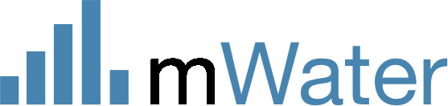

AI Roadmap
Professionalizing WASH at a Global Scale
✓ COMPLETED
Survey Translation
AI-powered translation of surveys
✓ COMPLETED
Dashboard Translation
Automated dashboard translations
⚡ IN PROGRESS
Smart Integrations
AI-powered data imports
Phase 1
Survey Design
Prompt-based survey creation
Phase 1
Data Integrity
AI validates against evidence
Phase 1
Data Supervision
Flag odd patterns in data
Phase 1
In-Field Guidance
On-device assistant
Phase 1
Usage Analytics
Safe AI insights
Phase 2
Dashboard Creation
Generate from prompts
Phase 2
AI Data Analysis
Insights & narratives
Phase 2
GIS Support
AI geospatial analysis
Phase 2
Smart Alerts
Proactive notifications
Phase 2
Smart Workflows
Automated responses
Phase 3
Predictive Planning
Forecasts & predictions
Phase 3
Modeling Integration
EPANET, WEAP, MODFLOW
Phase 3
Agentic AI
AI co-pilot for WASH